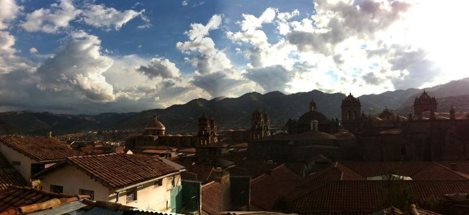

Wed, 06 Oct 2010 03:46:50 · Cusco · Peru · Travel · City · Architecture · Landscape · Photography
la vista de cusco taken from the hill of

La vista de Cusco - taken from the hill of Qorikancha (Quechua for ‘Golden Courtyard), at Plazoleta Santa Domingo.